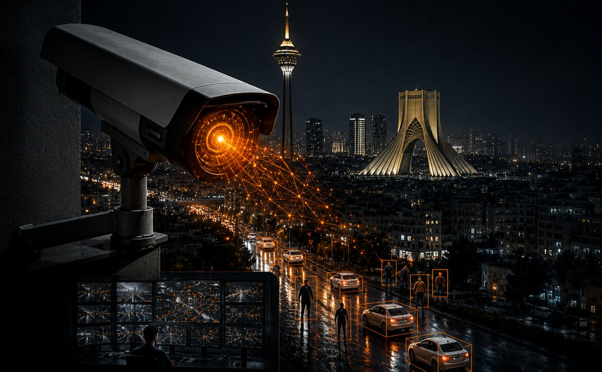

امروزه استفاده از دوربینهای مداربسته به یکی از مهمترین روشهای افزایش امنیت در منازل، شرکتها، فروشگاهها، کارخانهها و سازمانها تبدیل شده است.
هوشمندسازی دوربین مداربسته با استفاده از هوش مصنوعی و تحلیل هوشمند تصاویر، امکان شناسایی و بررسی خودکار رویدادهای مختلف را فراهم میکند.
هوشمندسازی دوربین مداربسته چیست؟
هوشمندسازی دوربین مداربسته به استفاده از فناوریهایی مانند هوش مصنوعی، یادگیری ماشین و تحلیل ویدئو برای پردازش هوشمند تصاویر گفته میشود.
در سیستمهای سنتی، دوربین تنها تصاویر را ضبط میکند؛ اما در سیستمهای هوشمند، تصاویر به صورت خودکار تحلیل میشوند.
مهمترین قابلیتهای دوربین مداربسته هوشمند
تشخیص حرکت هوشمند
یکی از مهمترین قابلیتهای سیستمهای هوشمند، تشخیص دقیق حرکت افراد و وسایل نقلیه است.
تشخیص ورود غیرمجاز
در صورت ورود فرد یا خودرو به محدوده ممنوعه، سیستم میتواند به صورت خودکار هشدار ارسال کند.
تشخیص چهره و شناسایی افراد
فناوری تشخیص چهره یکی از قابلیتهای پیشرفته در هوشمندسازی دوربینهای مداربسته است.
پلاکخوانی و شناسایی خودرو
دوربینهای پلاکخوان میتوانند پلاک خودروها را شناسایی و ثبت کنند.
مزایای هوشمندسازی دوربین مداربسته
- افزایش امنیت محیط
- شناسایی سریع رویدادهای مشکوک
- کاهش هشدارهای اشتباه
- امکان ارسال هشدار در لحظه
- مدیریت بهتر ورود و خروج افراد و خودروها
- تحلیل بهتر اطلاعات و تصاویر
هوشمندسازی دوربین مداربسته برای چه مکانهایی مناسب است؟
این فناوری برای بسیاری از محیطها قابل استفاده است، از جمله:
- منازل و ساختمانهای مسکونی
- مجتمعهای تجاری و اداری
- کارخانهها و محیطهای صنعتی
- انبارها و مراکز لجستیکی
- فروشگاهها و مراکز خرید
- پارکینگها
- سازمانها و شرکتها
تفاوت دوربین مداربسته معمولی با دوربین هوشمند
در سیستمهای معمولی، دوربین تصاویر را ضبط میکند و برای بررسی یک اتفاق، اپراتور باید ساعتها فیلم ضبط شده را مشاهده کند.
اما در سیستمهای هوشمند، نرمافزار و هوش مصنوعی تصاویر را به صورت خودکار تحلیل میکنند.
چرا باید دوربینهای مداربسته را هوشمند کنیم؟
هوشمندسازی دوربین مداربسته به شما کمک میکند تا به جای مشاهده مداوم تصاویر، سیستم به صورت خودکار رویدادهای مهم را شناسایی کند.
جمعبندی
هوشمندسازی دوربین مداربسته یکی از بهترین راهکارها برای افزایش امنیت و کنترل بهتر محیط است.
با استفاده از فناوری هوش مصنوعی و تحلیل تصاویر، میتوان سیستمهای نظارت تصویری را به ابزارهایی دقیق، سریع و هوشمند تبدیل کرد.
سوالات متداول درباره هوشمندسازی دوربین مداربسته
هوشمندسازی دوربین مداربسته چیست؟
هوشمندسازی به استفاده از هوش مصنوعی و نرمافزارهای تحلیل تصویر برای شناسایی خودکار افراد، خودروها و رویدادهای مختلف گفته میشود.
آیا دوربینهای قدیمی را میتوان هوشمند کرد؟
در بسیاری از پروژهها امکان ارتقای سیستم موجود با استفاده از تجهیزات و نرمافزارهای مناسب وجود دارد.
مهمترین قابلیت دوربینهای هوشمند چیست؟
تشخیص حرکت، تشخیص چهره، پلاکخوانی، تشخیص ورود غیرمجاز و تحلیل هوشمند تصاویر از مهمترین قابلیتهای این سیستمها هستند.